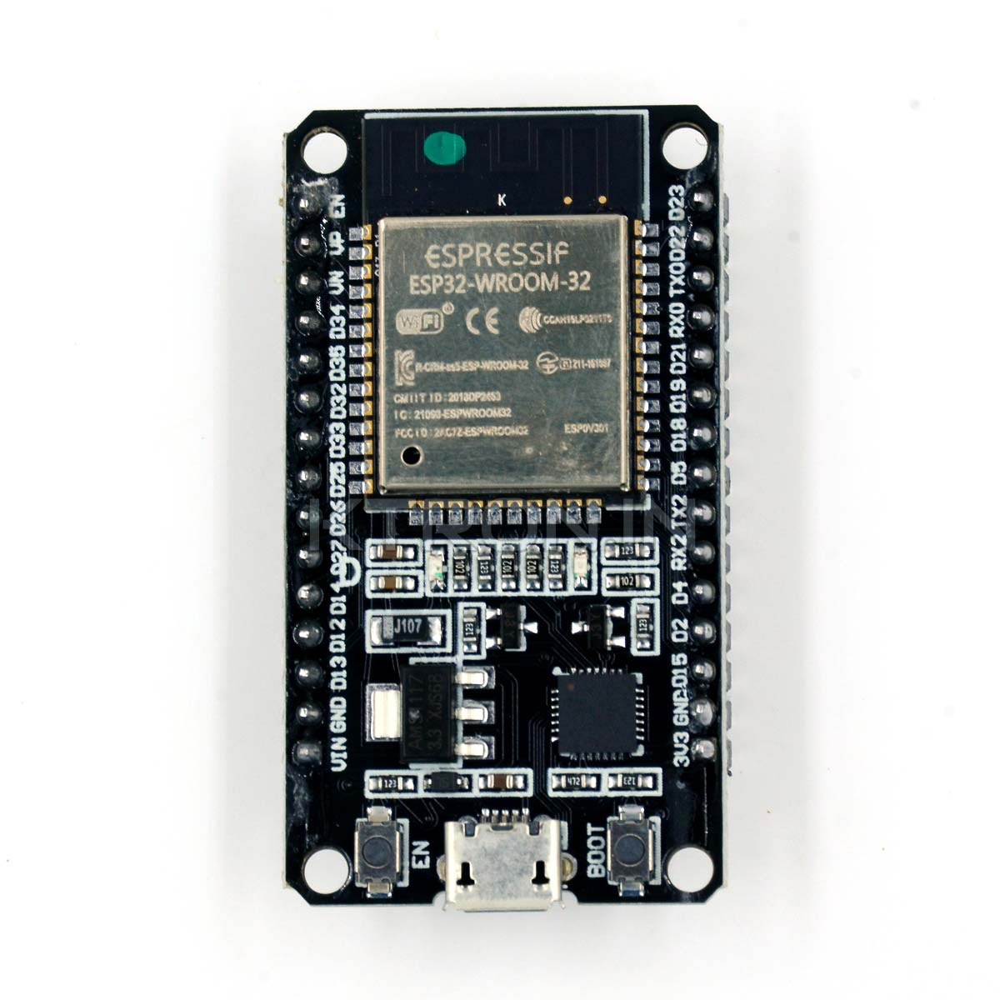

Microcontroladores: A Base de Inovação
Os microcontroladores são fundamentais para a eletrónica moderna. Desde projetos educacionais até automação avançada, estas placas oferecem um universo de possibilidades.
Placas Populares
- Processador: ATmega328P (8-bit).
- Memória: 32 KB Flash, 2 KB SRAM.
- Pinos GPIO: 14 digitais, 6 analógicos.
- Usos: Educação, robótica simples.

- Processador: Dual-core Tensilica Xtensa LX6.
- Comunicação: Wi-Fi, Bluetooth.
- Pinos GPIO: Mais de 30.
- Usos: IoT, automação.
- Processador: RP2040 Dual-core.
- Memória: 264 KB SRAM.
- Pinos GPIO: 26.
- Usos: Energia baixa, projetos educacionais.
- Processador: Nordic nRF52833.
- Memória: 512 KB Flash, 128 KB RAM.
- Pinos GPIO: 25.
- Usos: Educação, sensores integrados.
Comparação de Características
Protocolos de Comunicação
Os microcontroladores suportam uma variedade de protocolos, incluindo:
- I2C: Comunicação de dois fios para sensores e periféricos.
- SPI: Alta velocidade para dispositivos como displays e cartões SD.
- UART: Comunicação serial básica.
- CAN: Usado em aplicações automotivas e industriais.